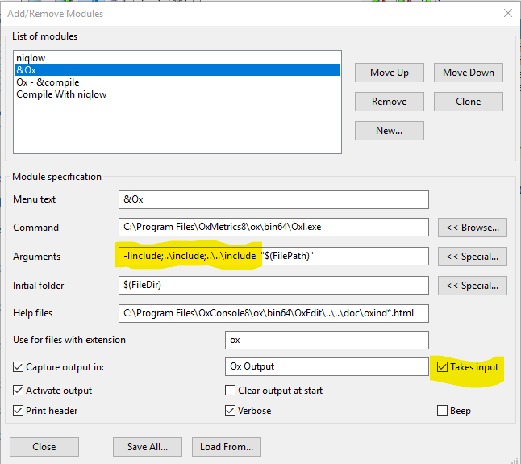
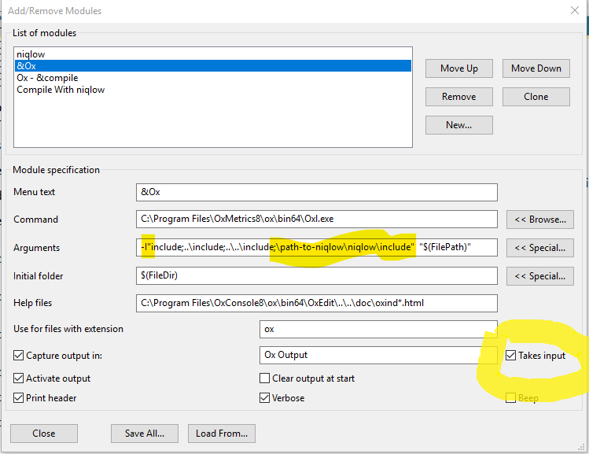

The folder will have a name like niqlow-Release-3.55. You can rename the folder to simply niqlow.
If you use git:
Clone https://github.com/ferrall/niqlow.git
Checkout the latest release branch.
Include niqlow in your Ox path.
For niqlow to work properly, its include folder must be on the include path when you run an Ox program.
Let PATH/niqlow be the full path to the niqlow folder after you have extracted and renamed it.
On Windows and Macs:
If your program called myprogram.ox relies on niqlow you can run it like this:
oxl.exe -i"PATH/niqlow/include" myprogram.ox.
Again, PATH is where you extracted the niplow folder on your computer. You only need the quotes around the path if the path contains spaces.
In OxEdit
One way to do this when using OxEdit is to use Tools->Add/Remove Modules to add -i"PATH/niqlow/include" as an Argument to the Ox run tool.
Here is a screenshot for that dialog:

First, make sure to check on the Takes Input option on the same menu.
Otherwise if you run the main examples program nothing will happen because OxEdit will not send
your keyboard input to the program.
Second, note that the Argument box is a list of paths, in this case each path is relative to the folder that
Ox program is located (such as ../include).
Here is a screenshot for how you would edit the box:

Note that quotes now surround the path, which is required if the path to niqlow includes spaces.
Folders are separated by ";", so the full path to niqlow/include is placed at the end of the path.
Make sure there is a space between the closing quote and the opening quote of the next argument.
Click on CLOSE below to close the dialog and save the changes.
Unix
Ox Console on Unix is invoked with the script /OxMetrics8/ox/bin/oxl (or bin64/oxl with the 64-bit version.
It uses the environmental variable OX8PATH for the include path. You can modify that path in your
shell profile file to include PATH/niqlow/include. (Details can differ, so an example is not shown.
Using CFMPI or other shared object (DLL) libraries
If you are using CFMPI modify the LD_LIBRARY_PATH so that the system can find the shared object files at execution time. You can add a line to the oxl script:
Run the program. Either type Ctrl R or click the first "running man" on the OxEdit menu.
From a command line prompt
PATH/niqlow/examples> oxl RosenbrockMain
Check the output
You get should look like the output here:
niqlow/examples/output/Rosenbrock.txt
Use niqlow in your Ox program.
Do this by adding an import to the top
of your .oxor.h or .oxh file:
#import "niqlow"
If you get a runtime error that a file cannot be found it is probably because the niqlow/include path
has not properly been added to the Ox include path.